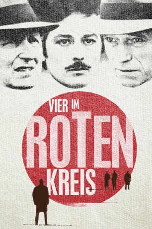

#3932 Vier im roten Kreis
Alternativ: Le Cercle Rouge (Englischer Titel)
 
 IMDB-Wertung: 8.1 / 10
IMDB-Wertung: 8.1 / 10  Metascore: 0
Metascore: 0 
Französischer Heist-Film aus dem Jahr 1970. Meisterdieb Corey kommt frisch aus dem Knast und beginnt gleich mit den Planungen für seinen nächsten Coup: Ein perfekt gesichertes Juwelengeschäft. Seine Komplizen sind der entflohene Häftling Vogel und der ehemalige Polizeischarfschütze Jansen. Während sie den Einbruch vorbereiten, ist ihnen bereits der Kommissar Mattei auf der Spur.
Jahr: 1970
Dauer: 140 Minuten
FSK: 16
Land: Frankreich Studio: Columbia Film-VerleihTonspuren:
Untertitel: Deutsch,
Auflösung: 1080p (1920x1040) Größe: 11059 MB
Genre: Thriller, Drama, Krimi
Regisseur: Jean-Pierre Melville
Drehbuch: Edgar Dutka
Soundtrack:
Darsteller:
 Alain Delon als Corey
Alain Delon als Corey Bourvil als Le Commissaire Mattei
Bourvil als Le Commissaire Mattei- Gian Maria Volontè als Vogel
 Yves Montand als Jansen
Yves Montand als Jansen Paul Crauchet als Le Receleur
Paul Crauchet als Le Receleur- Paul Amiot als L'inspecteur général de la police
- Pierre Collet als Le Gardien de prison
- André Ekyan als Rico
- Jean-Pierre Posier als L'assistant de Mattei
- François Périer als Santi
- Yves Arcanel als Le juge d'instruction
- René Berthier als Le directeur de la P.J.
- Jean-Marc Boris als Le fils Santi
- Jean Champion als Le garde-barrière
- Yvan Chiffre als Un policier
- Anna Douking als L'ancienne amie de Corey
- Robert Favart als Le vendeur chez Mauboussin
- Roger Fradet als Un policier
- Édouard Francomme als Le gardien du billard
- Jean Franval als Le tenancier d'hotel
- Jacques Galland als Le chef de train
- Jean-Pierre Janic als Paul - l'homme de Rico
- Pierre Lecomte als L'adjoint de l'I.G.S.
- Jacques Léonard als Un policier
- Jacques Leroy als Un policier
- Jean Pignol als L'employé du greffe
- Robert Rondo als Un policier
- Guy Henry als Un garde , uncredited
Datei: X:\1970\Vier im roten Kreis (1970, FSK16, 1920x1040).mkv seit 02.07.2016
Festplatte: HD 1900-1970
 Es gibt insgesamt 24 Filme in der Gruppe '1970'
Es gibt insgesamt 24 Filme in der Gruppe '1970'